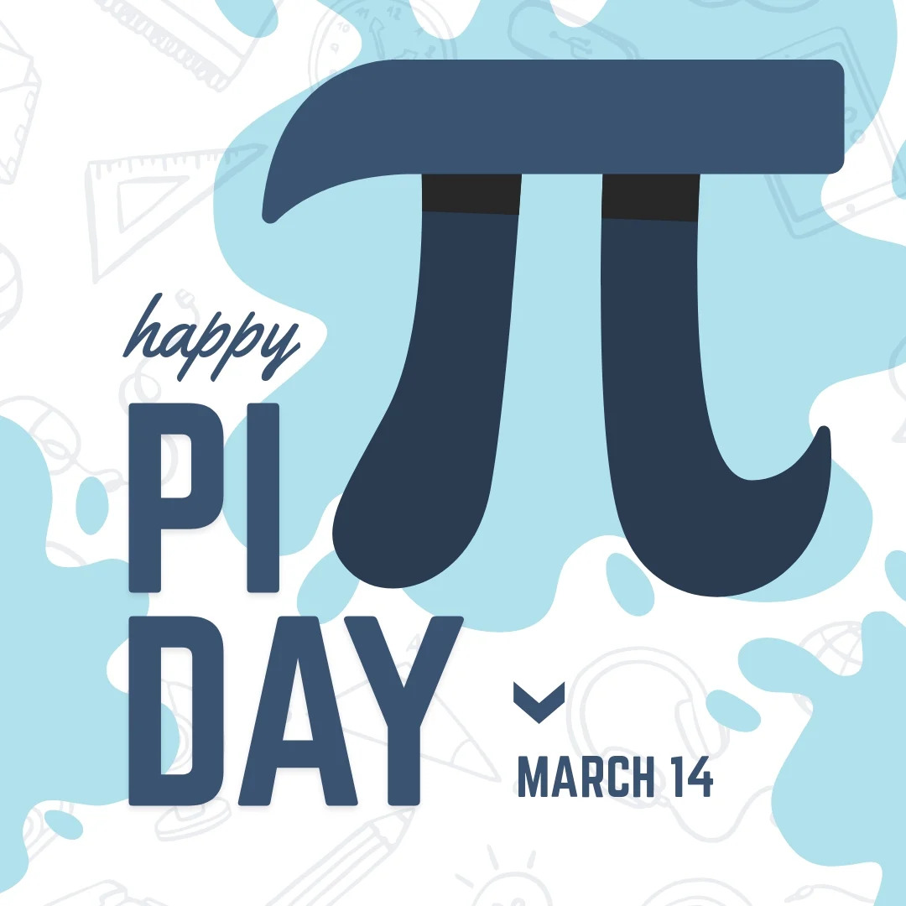
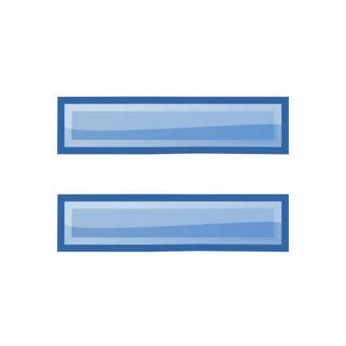

Estudiante de Berkeley con los famosos teoremas imposibles
Un estudiante de posgrado en la universidad de Berkeley llegó
tarde a la clase de estadística un día de 1939. En su apuro, copió
dos problemas de la pizarra que, pensó, serían deberes. A los
pocos días los entregó al profesor disculpándose por la tardanza,
ya que le habían resultado más difíciles de lo habitual. Esos
deberes eran en realidad dos famosos teoremas que hasta entonces
nadie había probado.

El dia conmemorativo de PI
El día de Pi o de la Aproximación de Pi es un día en honor a la
expresión matemática Pi (3,1415926). Este día fue elegido de
acuerdo al formato de fecha americano (mes/día), es decir, se
celebra el 14 de marzo de cada año, en concreto, y para ser más
exactos, a las 1:59 am.

Invencion del =
Hace más de 400 años el matemático inglés Robert Recorde inventó
las dos rayas = que utilizamos en cualquier operación, para
indicar igualdad porque “dos cosas no pueden ser más iguales que
dos rectas paralelas”.

Clases profesionales
Hasta el siglo XVI, las multiplicaciones eran consideradas tan
complicadas que solo se enseñaban en las universidades. ¡Imagina
lo desafiante que debía ser aprenderlas!